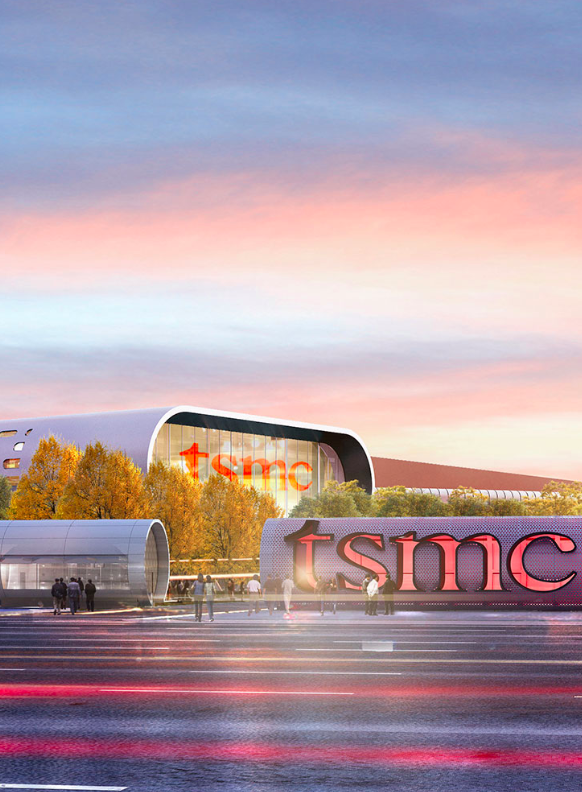

<html>
	<head>
		<title>Rebecca Yeap</title>
		<link rel="icon" href="assets/img/tagicon.png">
		<link rel="stylesheet" type="text/css" href="assets/css/bootstrap.min.css">
		<link rel="stylesheet" type="text/css" href="assets/css/tsmc.css">
		<meta name="viewport" content="width=device-width, initial-scale=1.0">
	</head>
</html>
<body>
	<div id="navbar">
		<div class="menu-area">
            <ul class="inner-page-menu">
                <li><a href="index.html">work</a></li>
                <li><a href="about.html">about</a></li>
                <li><a href="nonwork.html">photo</a></li>
            </ul>
		</div>
	</div>
	<div class= "container-fluid" id="about_block"> 
		<div class="row">
			<div class="col-md-6 offset-md-2">
				<div style="padding-top: 100px; margin-left: 50px">
					<h2>TSMC</h2>
					<p>STRATEGY・UX DESIGN・MAY 2017</p>
				</div>
				<div class="row">
					<div class="col-md-6" style="padding-top: 20px;margin-left: 50px">
					<p>Taiwan Semiconductor Manufacturing Company, <a href="https://www.tsmc.com/english/aboutTSMC/index.htm">TSMC</a>, is the largest integrated circuit or “chip” foundry and serves the most advanced manufacturing processes to global tech giants including Apple, Nvidia, and Qualcomm.</p>

					<p>In the summer of 2018, I worked as a Brand Management Intern, on two projects for the latest showroom located at the TSMC’s fabrication center in Nanjing, China. I had the unique opportunity to both strategize the plan and design the end-to-end experience of a now implemented 40-inch kiosk touchscreen. 
					 </p> 

					</div>
				</div>
				
			</div>
		</div>

		<div class="row">
			<div class="col-md-10 offset-md-1"> 
				
			</div>
			
		</div>
	</div>
		
</body>
</html>